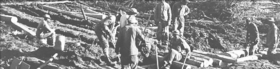
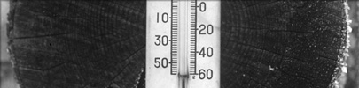

Après l’attaque de Pearl Harbor par les Japonais, en décembre 1941, le gouvernement américain a décidé qu’il était impératif de relier l’Alaska au reste du pays par voie terrestre. Il ne s’agissait de rien de moins que de construire, par delà cinq chaînes de montagnes, une route de 2400 km traversant certains des coins les plus sauvages de la planète : une entreprise monumentale!
On confia au corps de génie de l’armée américaine la mission de réaliser le tracé préliminaire dans les contrées encore vierges. Comme la plupart des régiments de génie avaient déjà été envoyés au combat, le ministère de la guerre américain constitua de nouveaux bataillons, composés exclusivement de soldats noirs sous les ordres d’officiers blancs, comme le dictait la pratique ségrégationniste poursuivie à l’époque par l’armée américaine.
Parmi les nouvelles recrues, très peu avaient une formation en génie. Nombre d’entre elles venaient du sud des États-Unis et n’avaient jamais eu à affronter l’hiver. Par surcroît, elles devaient composer avec l’idée préconçue que les Noirs font de piètres soldats, incapables de s’acquitter convenablement de leurs fonctions en situation de stress. Pour couronner le tout, les officiers blancs étaient très contrariés d’avoir des Noirs sous leur commandement et le manifestaient ouvertement. En dépit de tous ces obstacles, les soldats noirs ont réussi à frayer une nouvelle route en seulement huit mois.
Les Afro-Canadiens ont participé à la défense du pays depuis le début de la colonisation. Durant la Deuxième Guerre mondiale, on envisageait de les confiner dans des unités ségréguées, mais leur refus d’obtempérer fit céder les autorités et on les a finalement admis comme membres à part entière dans les unités régulières de l’armée de terre, de la marine et de l’armée de l’air.
« Nos camions et notre machinerie lourde étaient finis, nos outils aussi, et nos uniformes n’avaient guère plus fière allure. »
(ci-dessus)
Près de 11 000 soldats étaient employés à la construction de la route de l’Alaska, à une époque (1941) où la population du Yukon au grand complet comptait moins de 5 000 personnes.
Archives du Yukon, fonds R. G. Gabriel, 2005/10, nº 18
(À gauche)
Timbre illustré d’un dessin d’A. Y. Jackson.
Photo reproduite avec la gracieuse permission de la © Société canadienne des postes {1967}
L’apport des régiments composés de noirs a contribué à faire pencher la balance en faveur de l’intégration dans les forces armées américaines.
Office national du film du Canada. Photothèque / Bibliothèque et Archives Canada / PA-121714

Reproduction du pli Premier jour du service postal américain marquant le 50e anniversaire de la construction de la route de l’Alaska.
Archives du Yukon, Recueil 1992-0541, nº 1

Archives du Yukon, Whitehorse Star, 4 décembre 1942
Le soldat Walter T. Donald, de Quitman, au Mississippi, s’apprête à faire la barbe à son homologue Joseph Lawrence, d’Augusta, en Géorgie, à un camp avancé.
Office national du film du Canada. Photothèque / Bibliothèque et Archives Canada / PA-130479
Le froid extrême était aussi dur pour les militaires que pour le matériel.
Archives du Yukon, fonds Claude et Mary Tidd, nº 8544

Extrait d’un poème de J. Roscoe Hurst
Archives du Yukon, Recueil 1992-116